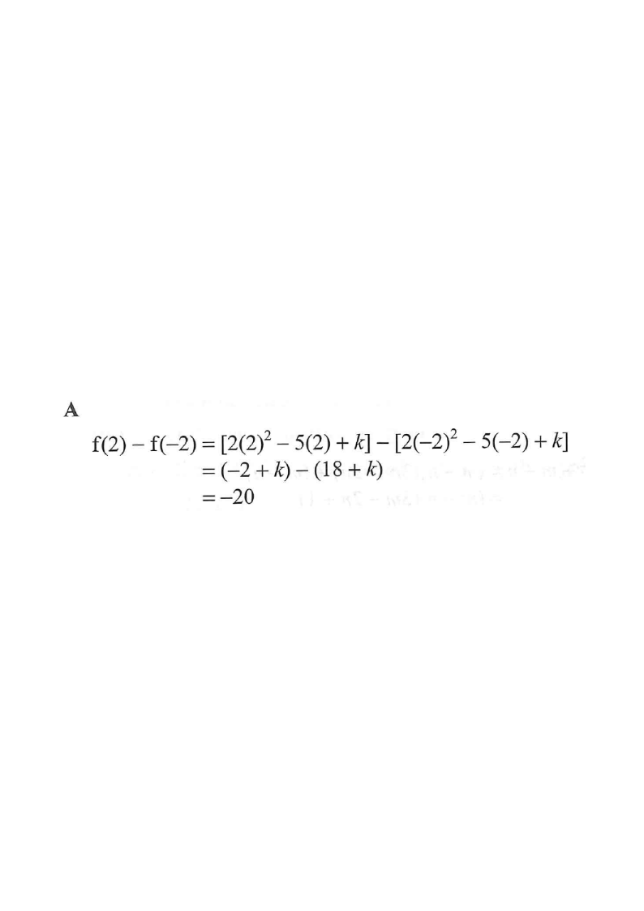

The parabola \(y=2x^2-5x+k\) with the two points \(x=-2\) and \(x=2\).
Parabola \(y=2x^2-5x+k\)
Point at \(x=-2\)
Point at \(x=2\)
Vertical drop \(=f(2)-f(-2)\)
HKDSE 2017 Paper 2 · Q6
Functions and Graphs
Let \(k\) be a constant. If \(f(x)=2x^{2}-5x+k\), then \(f(2)-f(-2)=\)
A. \(-20\).
B. \(0\).
C. \(16\).
D. \(24\).

Figure (original exam diagram)
STEP 1Write down the function.
\[ f(x)=2x^{2}-5x+k \]
\(k\) is an unknown constant — it will cancel out later, so keep it as a symbol.
STEP 2Substitute \(x=2\).
\[ f(2)=2(2)^{2}-5(2)+k=8-10+k=-2+k \]
Square first: \(2^2=4\), then \(2\times4=8\).
STEP 3Substitute \(x=-2\).
\[ f(-2)=2(-2)^{2}-5(-2)+k=8+10+k=18+k \]
Remember \((-2)^2=+4\) and \(-5\times(-2)=+10\).
STEP 4Subtract \(f(-2)\) from \(f(2)\).
\[ f(2)-f(-2)=(-2+k)-(18+k) \]
The \(+k\) and \(-k\) cancel — the answer is independent of \(k\).
STEP 5Simplify.
\[ f(2)-f(-2)=-2-18+k-k=-20 \]
This is the vertical gap between the two points on the parabola.
Answer: A. \(-20\)